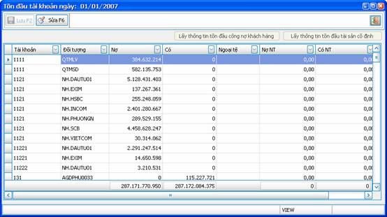
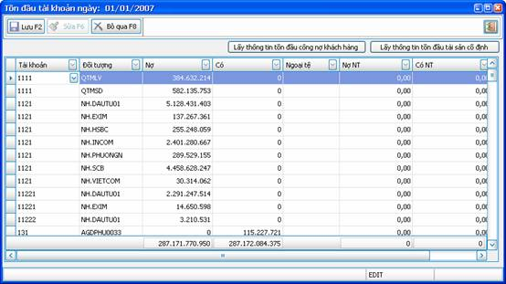

Mục Tồn đầu tài khoản có chức năng lưu giữ số liệu tồn đầu kỳ của các tài khoản kế toán.
Chỉ phải nhập liệu số tồn cho kỳ kế toán đầu tiên khi bắt đầu sử dụng VES, số tồn của các kỳ sau VES sẽ tự tính toán dựa trên các phát sinh.
Từ menu “Tồn đầu” của chương trình Kế toán, chọn “Tồn đầu tài khoản”.
Thông tin quản lý:
Mỗi mẩu tin về số liệu tồn bao gồm các thông tin :
- Tài khoản
- Đối tượng : là chi tiết đối tượng của tài khoản (nếu tài khoản có theo dõi chi tiết đối tượng)
- Nợ: số dư bên nợ của tài khoản.
- Có: số dư bên có của tài khoản.
- Ngoại tệ: là mã ngoại tệ nếu tài khoản này có theo dõi ngoại tệ.
- Nợ NT: số dư bên nợ ngoại tệ.
- Có NT: số dư bên có ngoại tệ
Các cửa sổ của nghiệp vụ:
Ø Cửa sổ danh sách:

Hình 1
Đây là danh sách số liệu số dư đầu kỳ các tài khoản.
Ø Cửa sổ nhập liệu:
Từ cửa sổ danh sách, bạn có thể click vào nút “Sửa” để thay đổi số liệu tồn đầu kỳ:

Các thao tác:
- Để sửa thông tin 1 mẩu tin đã có sẵn, bạn di chuyển con trỏ đến vị trí mẩu tin đó và thay đổi thông tin cần sửa.
- Để thêm mới 1 mẩu tin, bạn di chuyển con trỏ đến dòng trắng ở dưới cùng và nhập thông tin vào.
- Nút “Lấy thông tin tồn đầu công nợ khách hàng” để kết chuyển số dư đầu kỳ của các đối tượng khách hàng đã nhập liệu bên Module Bán hàng vào tài khoản 131. Khi bạn click vào nút này thì toàn bộ số liệu dư đầu của tài khoản 131 hiện tại sẽ được xóa đi và thay bằng số liệu mới lấy từ module Bán hàng qua.
- Nút “Lấy thông tin tồn đầu tài sản cố định” để kết chuyển số dư đầu kỳ của các tài khoản về TSCĐ đã nhập liệu bên phần Tồn đầu TSCĐ. Khi bạn click vào nút này thì toàn bộ số liệu dư đầu của các tài khoản TSCĐ hiện tại sẽ được xóa đi và thay bằng số liệu mới lấy từ Tồn đầu TSCĐ qua.
- Nút “Bỏ qua”: click vào nút này sẽ phục hồi lại số liệu ban đầu, bỏ qua những thay đổi mà bạn đã thực hiện.
- Nút “Lưu”: click vào nút này để lưu lại thông tin bạn đã thay đổi.